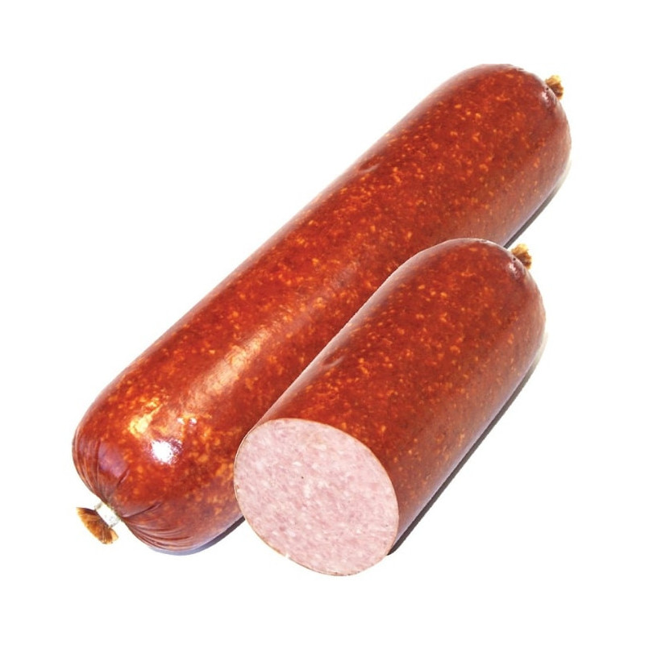

Desros

Cepelinai siaubingai sunkiai paruosiamas ir uzknisantis patiekalas kuri ruosia is esmes mamos ir tetos, todel juos verta valgyti atvykus i svecius arba kokioje valgykloje.
Cepelinams paruosti prireiks:
- Bulve
- Mesa
- Krakmolas
- Svogunas
- Lasiniai
Paruosimo budas ir eiga:
- Sutarkuoti bulves
- Nuspausti slapima
- Sudeti mesa i bulves
- Suformuoti cepaka
- Isvirti cepaka
Back